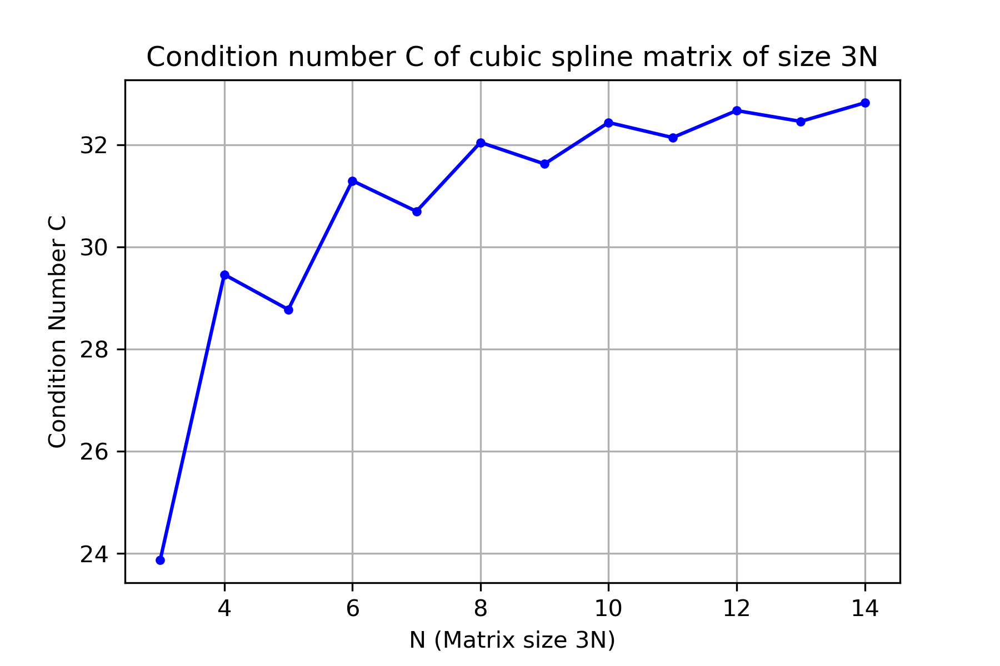

Interpolation
Contents
Interpolation#
An interpolating function provides information about values between points and beyond the range of the data. There are infinitely many different ways to interpolate a set of data! Polynomial interpolation is the simplest method whereas cubic spline interpolation provides much more flexibility.
{kind=link}
Interpolating Functions#
An interpolating function (or interpolant) for points \((t_0,y_0),\dots,(t_d,y_d)\) is a function \(f(t)\) such that \(f(t_k) = y_k\) for \(k=0,\dots,d\).
There are infinitely many different interpolating functions for any set of data. We impose different kinds of constraints on the form of the interpolant to ensure there is a unique solution which is meaningful for the data and can be computed efficiently. In the following sections we describe two kinds of interpolation: polynomial interpolation and cubic spline interpolation.
Polynomial Interpolation#
A polynomial of degree (at most) \(d\) is a function of the form
where \(c_0,c_1,\dots,c_d \in \mathbb{R}\). The collection of all polynomials of degree (at most) \(d\) is denoted by
Note that \(\mathbb{P}_d\) is a vector space of dimension \(d+1\).
Fix a positive integer \(d\) and let \(\phi_k(t) = t^k\) for \(k=0,\dots,d\). In other words, consider the polynomials
Since a polynomial \(p(t)\) of degree (at most) \(d\) is of the form
we see that the polynomials \(\phi_k(t)\) form a basis of \(\mathbb{P}_d\). The set \(\{ \phi_0(t),\dots,\phi_d(t) \}\) is called the monomial basis of \(\mathbb{P}_d\).
Given \(d+1\) points \((t_0,y_0), \dots,(t_d,y_d)\), polynomial interpolation (with respect to the monomial basis) is a polynomial of the form
such that \(p(t_k) = y_k\) for each \(k=0,\dots,d\). Each point defines an equation
therefore the coefficients \(c_0,c_1,\dots,c_d\) satisfy the system of linear equations
In matrix notation, the system is \(A \boldsymbol{c} = \boldsymbol{y}\) where
The matrix \(A\) is called the Vandermonde matrix for \(t_0,\dots,t_d\).
Let \(A\) be the Vandermonde matrix for points \((t_0,y_0), \dots,(t_d,y_d)\). Then
Proof. See Wikipedia:Vandermonde matrix for a proof. Let’s compute the formula for the cases \(d = 1\) and \(d = 2\). Compute for \(d = 1\)
For \(d=2\), use \(\mathrm{det}(A) = \mathrm{det}(U)\) from the LU decomposition. Compute
where
The determinant is the product of the diagonal entries of \(U\)
Consider \(d+1\) data points \((t_0,y_0), \dots , (t_d,y_d)\) such that \(t_i \not= t_j\) for \(i \not= j\). There exists a unique polynomial \(p(t)\) of degree (at most) \(d\) such that \(p(t_k) = y_k\) for each \(k=0,\dots,d\).
Proof. The formula for the determinant of the Vandermonde matrix shows that \(\mathrm{det}(A) \ne 0\) when the values \(t_k\) are distinct therefore it is invertible and so there is a unique solution of the system \(A \boldsymbol{c} = \boldsymbol{y}\).
Find the unique polynomial of degree 3 which interpolates the points
Solve the system \(A \boldsymbol{c} = \boldsymbol{y}\)
Let’s compute the LU decomposition of the Vandermonde matrix \(A\) so that we can reuse the result in other examples
Solve the systems \(L \boldsymbol{x} = \boldsymbol{y}\) and \(U \boldsymbol{c} = \boldsymbol{x}\) to find
Therefore the interpolating polynomial is
{kind=link}
The condition number of a Vandermonde matrix gets very large as the size of the matrix increases. This means that interpolation by the monomial basis is very sensitive to changes in the data for polynomials of large degree. For example, for \(11\) equally spaced points \(t_0=0,\dots,t_{10}=10\), the Vandermonde matrix \(A\) is 11 by 11 and has condition number larger than \(10^{12}\). Yikes!
{kind=link}
Cubic Spline Interpolation#
Consider \(N+1\) points \((t_0,y_0),\dots,(t_N,y_N)\). A cubic spline is a function \(p(t)\) defined piecewise by \(N\) cubic polynomials \(p_1(t),\dots,p_N(t)\) where
such that \(p(t)\), \(p'(t)\) and \(p''(t)\) are continuous functions.
Each polynomial \(p_k(t)\) is defined by four coefficients \(a_k,b_k,c_k,d_k\) therefore we require \(4N\) equations to specify the \(4N\) unknowns.
Interpolation at left endpoints yields \(N\) equations:
Interpolation at right endpoints yields \(N\) equations:
Continuity of \(p'(t)\) yields \(N-1\) equations:
Continuity of \(p''(t)\) yields \(N-1\) equations:
The conditions impose only \(4N-2\) equations therefore we need 2 more to determine the cubic spline uniquely. There are different choices such as the natural spline and the “not-a-knot” condition.
A natural cubic spline satisfies \(p''_1(t_0) = p''_N(t_N) = 0\).
Represent a cubic spline \(p(t)\) by the coefficient matrix
where the \(k\)th column of \(C\) consists of the coefficients for the \(k\)th cubic polynomial in the spline
Consider \(N+1\) points \((t_0,y_0),\dots,(t_N,y_N)\) (with \(t_i \not= t_j\) for \(i \not= j\)). The unique natural cubic spline \(p(t)\) which interpolates the points is given by the coefficient matrix
where \(d_k = y_{k-1}\) for \(k=1,\dots,N\) and the coefficients \(a_1,b_1,c_1,\dots,a_N,b_N,c_N\) are the solution of the linear system
where \(L_k = t_k - t_{k-1}\) is the length of the subinterval \([t_{k-1},t_k]\) and
Construct the natural cubic spline interpolating points
{kind=link}
Let \(p(t)\) be the natural cubic spline which interpolates the data
Suppose the coefficient matrix of \(p(t)\) is
Determine the coefficients \(a_4, b_4, c_4\), then compute the value \(p''(2.5)\).
First note that the \(t\) values are equally spaced thefore \(L_k = t_k - t_{k-1} = 1\) for each \(k\). Continuity of \(p(t)\), \(p'(t)\) and \(p''(t)\) yields equations
Therefore \(6a_3 + 2b_3 = 2b_4\) implies \(b_4 = 0\), the equation \(3a_3 + 2b_3 + c_3 = c_4\) implies \(c_4 = 1\) and finally \(6a_4 + 2b_4 = 2b_5\) implies \(a_4 = -2\).
The value \(t=2.5\) lies in the interval \([t_2,t_3]\) therefore we compute
{kind=link}
The condition number of the matrix for constructing the natural cubic spline does not increase as drastically with the number of points \(N+1\) as compared with the Vandermonde matrix. For example, for \(11\) equally spaced points \(t_0=0,\dots,t_{10}=10\), the Vandermonde matrix is 11 by 11 and has \(\mathrm{cond}(A) \approx 10^{12}\) whereas the cubic spline matrix is 30 by 30 and the condition number is only around \(33\).

Exercises#
Consider \(d\) data points \((t_1,y_1),\dots,(t_d,y_d)\) such that \(t_i \not= t_j\) for \(i \ne j\). Determine whether the statement is True or False.
There exists a unique polynomial of degree (at most) \(d-1\) which interpolates the data.
There exists a unique polynomial \(p(t)\) of degree (at most) \(d\) which interpolates the data and also satisfies \(p'(t_1)=0\) and \(p''(t_1)=0\).
There exists a unique polynomial \(p(t)\) of degree (at most) \(d\) which interpolates the data and \(p'(t_1)=0\).
Solution
True
False
True
Consider \(N+1\) data points \((t_0,y_0),\dots,(t_N,y_N)\). Let \(A_1 \boldsymbol{c}_1 = \boldsymbol{b}_1\) such that the solution \(\boldsymbol{c}_1\) consists of the coefficients of the interpolating polynomial with respect to the monomial basis. Let \(A_2 \boldsymbol{c}_2 = \boldsymbol{b}_2\) such that the solution \(\boldsymbol{c}_2\) consists of the coefficients of the interpolating natural cubic spline. Do we expect \(\mathrm{cond}(A_1) < \mathrm{cond}(A_2)\) or \(\mathrm{cond}(A_1) > \mathrm{cond}(A_2)\) for large values of \(N\)? Explain.
Solution
We expect \(\mathrm{cond}(A_1) > \mathrm{cond}(A_2)\).
Suppose we have 4 points \((0,y_0),(1,y_1),(2,y_2),(3,y_3)\) and we want to interpolate the data using a spline \(p(t)\) constructed from \(3\) degree 2 polynomials \(p_1,p_2,p_3\) where
We require that \(p(t)\) and \(p'(t)\) are continuous and \(p''(t_0)=0\). Setup a linear system \(A \boldsymbol{x} = \boldsymbol{b}\) where the solution is
Note: the system depends on the unspecified values \(y_0,y_1,y_2,y_3\).
Solution
Suppose a cubic spline \(p(t)\) interpolates the data
and \(p(t)\) has coefficient matrix (rounded to 2 decimal places)
Determine the coefficients \(a_3,b_3,c_3\).
Solution
\(a_3 = -0.55\), \(b_3 = 2.24\), \(c_3 = -1.69\)
Consider the natural cubic spline \(p(t)\) represented by the coefficient matrix
where \(t_0 = 0,t_1 = 1,t_2 = 2,t_3 = 3,t_4 = 4,t_5 = 5,t_6 = 6,t_7 = 7\). Find the value \(b_4\) and compute \(p''(5.5)\).
Solution
\(b_4 = 0\), \(p''(5.5) = -42\)